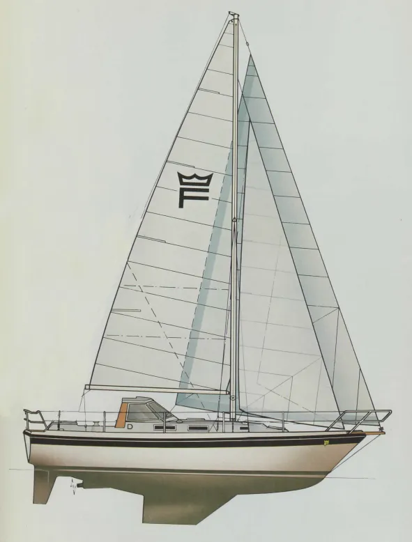

Nuestra Historia
Escuela Náutica Altair nace de la pasión por el mar y el deseo de compartir la experiencia de la navegación con todos aquellos que sueñan con surcar las aguas del Mediterráneo.
Ubicados en Barcelona, ofrecemos formación náutica de calidad con un enfoque personalizado y profesional. Nos especializamos en titulaciones náuticas recreativas, desde la Licencia de Navegación hasta el PER y sus ampliaciones.
Nuestro compromiso es formar navegantes competentes y seguros, capaces de disfrutar del mar con responsabilidad y autonomía.
Nuestro Instructor - Ricard Prehn
Ricard es el alma de Escuela Náutica Altair. Navegante apasionado con años de experiencia surcando los mares, ha cruzado el Atlántico a vela y ha navegado por numerosas costas del mundo.
Experiencia y Titulaciones
- Capitán de Yate (título profesional más alto)
- Años de experiencia como instructor náutico
- Navegación oceánica y costera
- Especialista en navegación a vela
- Experto en electrónica náutica
Filosofía de Enseñanza
Ricard cree firmemente que la náutica debe ser accesible para todos. Su metodología se basa en:
- Enseñanza práctica y cercana
- Adaptación a cada alumno
- Grupos muy reducidos para máxima atención
- Transmitir no solo conocimientos, sino pasión por el mar
Nuestro Barco: El Alma de Altair
Finnsailer 34 (1979) - Un Clásico con Historia
El corazón de nuestra escuela es un Finnsailer 34, un motovelero clásico finlandés diseñado por Hans Groop y construido bajo los estándares del Lloyd's Register. En 2019, Ricard lo trajo navegando desde Dinamarca, cruzando el Báltico, el Canal de la Mancha y el Atlántico Norte hasta Barcelona. Una travesía de más de 2.000 millas que demostró su increíble robustez y seguridad.
Lo Que Hace Único a Nuestro Barco
- Construcción Élite: Casco de fibra súper reforzado con Certificado Lloyd's.
- Motor y Propulsión: Volvo Penta D2-40 (2017) con hélice plegable de 3 palas.
- Tecnología: Electrónica de última generación (Radar Quantum, Axiom 9, AIS).
- Diseño Seguro: Cockpit central profundo y protegido de los elementos.
- Confort: Interiores en caoba, calefacción y cocina completa.
- Maniobra: Velas Elvstrøm, hélice de proa y piloto automático.
"Un barco con alma que transmite seguridad y pasión por el mar. Perfecto para aprender de verdad."
Galería de Fotos

Rendimiento Técnico (Polars)
Gráfico polar de velocidad del Finnsailer 34 (BELA). Muestra la velocidad del barco (eje radial) en función del ángulo del viento real (eje angular) para diferentes intensidades de viento (6-20 nudos).
Datos basados en el diseño original de Hans Groop y medidas reales de navegación.
Nuestros Valores
Pasión
Amamos el mar y transmitimos esa pasión en cada clase
Seguridad
La seguridad siempre es nuestra máxima prioridad
Cercanía
Trato personalizado y grupos muy reducidos
Excelencia
Formación de la más alta calidad
¿Por Qué Elegirnos?
- Experiencia real: Nuestro instructor ha vivido el mar, no solo lo enseña
- Grupos reducidos: Máximo 7 alumnos por barco, garantizamos atención personalizada
- Flexibilidad: Horarios adaptados a tu disponibilidad
- Ubicación privilegiada: Barcelona y la costa mediterránea
- Metodología práctica: Aprendes haciendo, no solo estudiando
- Trato humano: No eres un número, eres parte de nuestra familia náutica
- Seguimiento completo: Desde el primer día hasta que obtienes tu título
- Pasión por la enseñanza: Nos importa que aprendas y disfrutes
Testimonios de Nuestros Alumnos
Con más de 85 reseñas de 5 estrellas en Google, nuestros alumnos respaldan nuestra calidad:
"Ricard es un instructor fantástico. Explica todo con mucha claridad y paciencia. Las prácticas de vela fueron increíbles. Sin duda volveré para ampliar mi titulación."
"Experiencia increíble! Poder realizar el PER con Ricard ha sido un constante aprendizaje, su pasión y su experiencia nos lo transmitió desde el primer día."Ver Más Reseñas